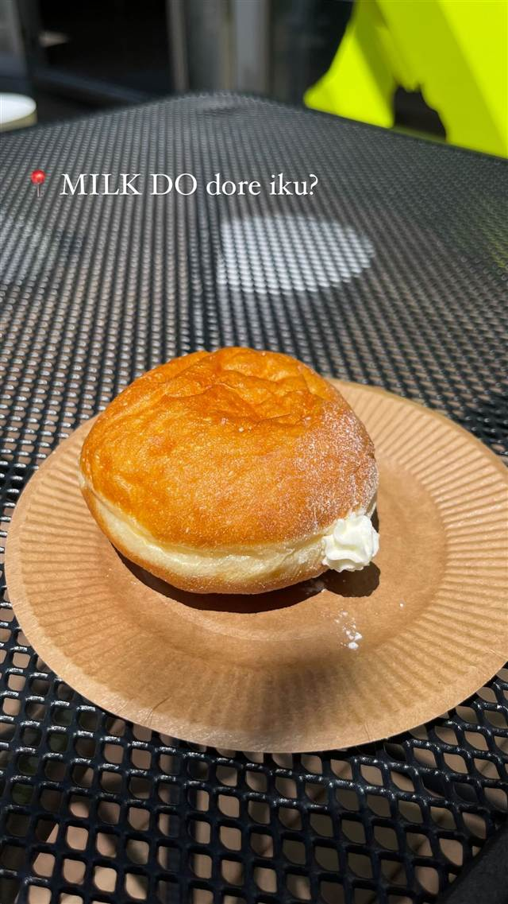

スイーツ · 天王洲アイル
MILK DO dore iku? 品川天王洲アイル店
天王洲アイル限定フレーバーもある札幌発の生ドーナツ
MILK DO dore iku?
「MILK DO dore iku?」は札幌で2023年に誕生した生ドーナツ専門店で、連日行列ができる人気ぶり。2024年5月に品川・天王洲アイルへ関東初出店を果たした。北海道十勝産小麦粉と卵・バターをたっぷり使い、外はカリッと中はとろける食感に仕上げた生ドーナツが看板で、天王洲アイル店限定のフレーバーも楽しめる。
TRIVIA
豆知識
- 天王洲アイル店だけの限定フレーバー「フランブリュレ」がある。
- 口に入れると「しゅわっ」ととろけるような独特の食感が特徴。
REVIEWS
世間の評判
3.09食べログ
外カリ中ふわの食感と売り切れの早さ
- 外はカリッと中はふわふわの生ドーナツの食感を評価する声が多い
- 午後に行くと目当ての商品が売り切れていることが多いという声がある
- コワーキングスペース内にあり初めては見つけにくいという声もある
食べログ 口コミ86件
| 創業 | 2023年2月14日、札幌で創業。2024年5月29日に品川天王洲アイル店が関東初出店としてオープン。 |
|---|---|
| 看板 | 生ドーナツ |
| こだわり | 北海道十勝産小麦粉に卵とバターをたっぷり配合し、高温で短時間揚げることで外はカリッと中はとろける食感に仕上げる。北海道の牧場の低温殺菌牛乳も使用する。 |
| 掲載・評価 | 札幌本店は連日行列ができる人気店。 |
| どこから | 都心 |
| 営業時間 | 月〜日 11:00-18:00 |
| 予算 | 昼 ¥1,000～¥1,999 夜 ¥1,000～¥1,999 |
| 場所 | 天王洲アイル駅 東京都品川区東品川2-2-28 |
| メモ | 天王洲アイル店限定で「フランブリュレ」ドーナツを販売。約10種類のフレーバーを展開。 |
食べたもの：ドーナツ
OFFICIAL
店からの知らせ
その日の限定や臨時の休みは、店のXに出ます。
ONSEN & SAUNA